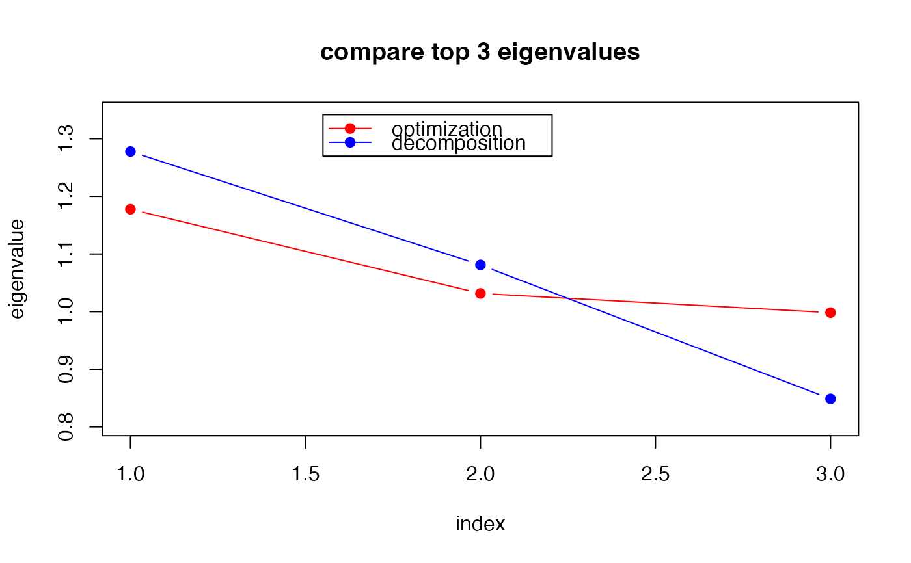

Estimation of Distribution Algorithm with MACG Distribution
Source:R/special_grassmann_optmacg.R
grassmann.optmacg.RdFor a function \(f : Gr(k,p) \rightarrow \mathbf{R}\), find the minimizer and the attained minimum value with estimation of distribution algorithm using MACG distribution.
Arguments
- func
a function to be minimized.
- p
dimension parameter as in \(Gr(k,p)\).
- k
dimension parameter as in \(Gr(k,p)\).
- ...
extra parameters including
- n.start
number of runs; algorithm is executed
n.starttimes (default: 10).- maxiter
maximum number of iterations for each run (default: 100).
- popsize
the number of samples generated at each step for stochastic search (default: 100).
- ratio
ratio in \((0,1)\) where top
ratio*popsizesamples are chosen for parameter update (default: 0.25).- print.progress
a logical; if
TRUE, it prints each iteration (default:FALSE).
Value
a named list containing:
- cost
minimized function value.
- solution
a \((p\times k)\) matrix that attains the
cost.
Examples
#-------------------------------------------------------------------
# Optimization for Eigen-Decomposition
#
# Given (5x5) covariance matrix S, eigendecomposition is can be
# considered as an optimization on Grassmann manifold. Here,
# we are trying to find top 3 eigenvalues and compare.
#-------------------------------------------------------------------
# \donttest{
## PREPARE
A = cov(matrix(rnorm(100*5), ncol=5)) # define covariance
myfunc <- function(p){ # cost function to minimize
return(sum(-diag(t(p)%*%A%*%p)))
}
## SOLVE THE OPTIMIZATION PROBLEM
Aout = grassmann.optmacg(myfunc, p=5, k=3, popsize=100, n.start=30)
## COMPUTE EIGENVALUES
# 1. USE SOLUTIONS TO THE ABOVE OPTIMIZATION
abase = Aout$solution
eig3sol = sort(diag(t(abase)%*%A%*%abase), decreasing=TRUE)
# 2. USE BASIC 'EIGEN' FUNCTION
eig3dec = sort(eigen(A)$values, decreasing=TRUE)[1:3]
## VISUALIZE
opar <- par(no.readonly=TRUE)
yran = c(min(min(eig3sol),min(eig3dec))*0.95,
max(max(eig3sol),max(eig3dec))*1.05)
plot(1:3, eig3sol, type="b", col="red", pch=19, ylim=yran,
xlab="index", ylab="eigenvalue", main="compare top 3 eigenvalues")
lines(1:3, eig3dec, type="b", col="blue", pch=19)
legend(1.55, max(yran), legend=c("optimization","decomposition"), col=c("red","blue"),
lty=rep(1,2), pch=19)

par(opar)
# }